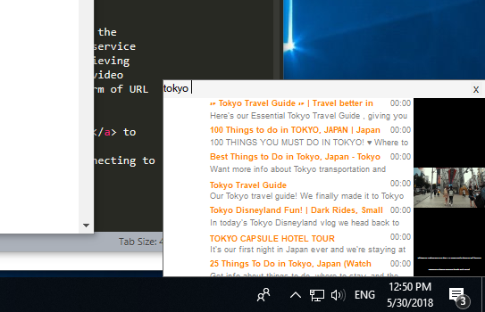
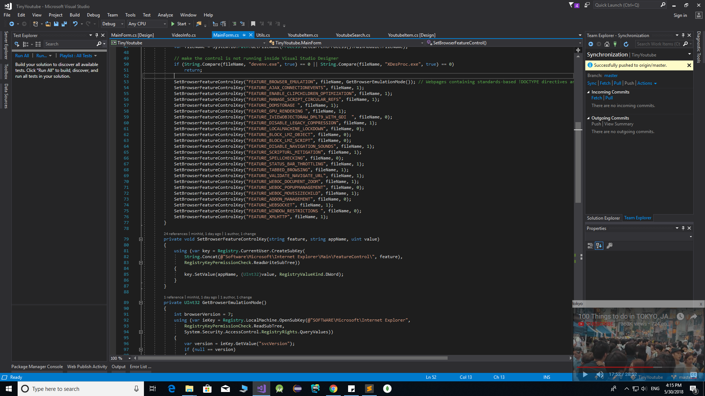

Tiny Youtube Player
Intro
This simple app provides the convenient way to watch Youtube videos while doing something else.
It locates at the bottom right corner of the desktop, stays on the top most of all windows and never closes (even if user presses Window + D keys).
It turns 50% transparent when user moves to other windows or 100% visible when user clicks on.

Development
I developed this app in 3 days using C#. To customize the Youtube video list with images, title and description, I created Youtube List View with each item is a Youtube List Item.
Instant Search
The Tiny Youtube provides instant search, user types in the search text box and the results will come in the customized drop-down list.
I used Youtube API to implement this instant search feature.
This API even allows developer to contact user profiles, playlists or upload video files.

Youtube PlayerThis is a big obstacle since the external window and mobile apps are not officially allowed to embed Youtube videos, so developer cannot simply use the Shockwave Flash component or Web Browser to play Youtube videos like before.
For the work-around solution, I still use Web Browser component, howerver, I gives it a bit update: Since the WebBrowser control on window form behaves differently from the full Internet Explorer, developer has to implement Feature Control to make it functions closely to the functionality of IE as possible, for example FEATURE_BROWSER_EMULATION. The guideline for this solution can be found here on Stack-Overflow.
Another problem is some contents are blocked on embedded drivers due to its copyright (with most of the copyrighted videos), so user has to go to Youtube website to watch. To overcome this issue, I set the additional header Referer to http://youtube.com whenever I put the URL to the browser. The similar problem can be found here for Android as well.
To adjust the player, I follow the guideline of using Youtube GET method with the following parameters:
- autoplay set to 1 for auto playing
- cc_load_policy set to 1 to close caption
- controls set to 0 to close the controls panel including the play, next buttons
- disablekb set to 1 to disable keyboard
- fs set to 0 to avoid full-screen function
- iv_load_policy set to 3 to avoid video annotations
- modestbranding set to 1 to hide Youtube icon
- rel set to 0 to not showing relative videos
- showinfo set to 0 to hide video's title and description
And this below image shows the final result, I feel very convenient to watch Youtube this way while doing my work. I don't have to switch to web browser to see what's going on.

Demo Video
Please watch the following video for more detail. Source code of this project can be found here on my Github page